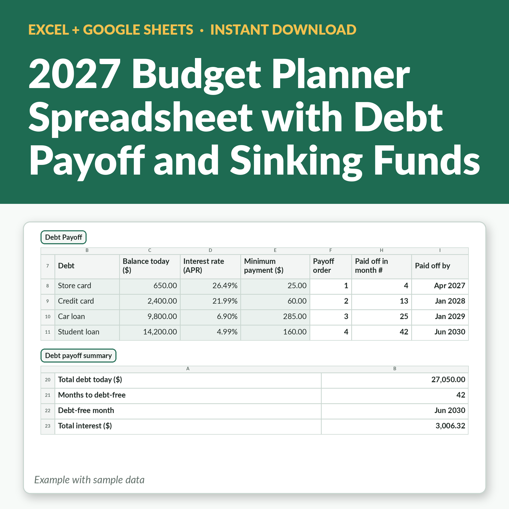

2027 Budget Planner Spreadsheet with Debt Payoff and Sinking Funds - Excel and Google Sheets
Plan all of 2027 in one file: a monthly budget, a debt payoff plan that shows the month you will be debt-free, and sinking funds that tell you how much to set aside each month. Your debt payments and savings flow into every month's budget automatically.
Buy on Etsy →
What's included
- Settings: budget year 2027, your currency and pay cycle (weekly, biweekly, every 4 weeks or monthly), with paydays counted for every month
- 12 monthly budget tabs: planned vs actual income and 20 spending categories, with over-budget flags
- Debt payoff for up to 10 debts: snowball or avalanche, with a month-by-month payoff schedule
- Months to debt-free, your debt-free date and total interest, for each debt and overall
- Sinking funds: goal, target date, saved so far and how much to set aside each month
- Year summary: income, spending, debt payments and savings for every month, plus debt and savings totals
See it on Etsy →Instant digital download from our Etsy shop, TallyBloomHQ.